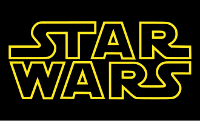

Star Wars
|
Star Wars Guerra nas Estrelas (Brasil) Guerra das Estrelas (Portugal/PALOP) |
|
|---|---|
|

Logotipo da série
|
|
| Criador(es) | George Lucas |
| Proprietário(s) | Lucasfilm |
| Filmes e televisão | |
| Filmes |
Star Wars (1977) The Empire Strikes Back (1980) Return of the Jedi (1983) The Phantom Menace (1999) Attack of the Clones (2002) Revenge of the Sith (2005) The Clone Wars (2008) The Force Awakens (2015) Rogue One (2016) The Last Jedi (2017) Solo (2018) The Rise of Skywalker (2019) |
| Séries de televisão |
The Mandalorian (2019–presente) The Book of Boba Fett (2021–presente) The Bad Batch (2021–presente) Andor (2022–presente) Ahsoka (2023–presente) The Acolyte (2024) |
| Site oficial | |
| http://www.starwars.com | |
Star Wars (Brasil: Guerra nas Estrelas / Portugal/PALOP: Guerra das Estrelas) é uma franquia do tipo space opera estadunidense criada pelo cineasta George Lucas, que conta com uma série de nove filmes de fantasia científica e dois spin-offs.[1] O primeiro filme foi lançado apenas com o título Star Wars,[2] em 25 de maio de 1977, e tornou-se um fenômeno mundial inesperado de cultura popular,[3] sendo responsável pelo início da "era dos blockbusters", que são superproduções cinematográficas que fazem sucesso nas bilheterias e viram franquias com brinquedos, jogos, livros, etc. Foi seguido por duas sequências, The Empire Strikes Back e Return of the Jedi, lançadas com intervalos de três anos, formando a trilogia original,[4][5] que segue o trio icônico formado por Luke Skywalker, Han Solo e Princesa Leia, que luta pela Aliança Rebelde para derrubar o tirano Império Galáctico; paralelamente ocorre a jornada de Luke para se tornar um cavaleiro Jedi e a luta contra Darth Vader, um ex-Jedi que sucumbiu ao Lado Sombrio da Força e ao Imperador.
Depois de 16 anos sem filmes novos, uma nova trilogia chamada de prequela[5] teve início em 1999, com The Phantom Menace. Esta volta no tempo para contar como Anakin Skywalker se transformou em Darth Vader e acompanha a queda da Ordem Jedi e da República Galáctica, substituída pelo Império. Sendo também lançada com intervalos de três anos, com o último lançado em 2005. As reações à trilogia original foram extremamente positivas, enquanto a trilogia prequela recebeu reações mistas tanto da crítica especializada como do público. Mesmo assim, todos os filmes foram bem sucedidos nas bilheterias e receberam indicações ou ganharam prêmios no Óscar.
Em 2008, foi lançado o filme de animação Star Wars: The Clone Wars, um spin-off piloto para série de animação de mesmo título. Neste ano foi divulgado a soma da bilheteria arrecadada com os seis episódios existentes, que totalizava aproximadamente 4,41 bilhões de dólares.[6] Após a estreia do episódio VII,VII,IX e Rogue One, este valor ultrapassou 10 bilhões, fazendo de Star Wars a segunda série cinematográfica com maior bilheteria da história.[7][8] E é a maior franquia da história do cinema, com a soma dos filmes e produtos equivalente a mais que 30 bilhões de dólares.[9] Esta gerou diversos subprodutos, incluindo jogos eletrônicos, desenhos animados, livros e quadrinhos, o que resultou na criação do universo expandido da saga.[10] Em 2012, a The Walt Disney Company comprou a Lucasfilm por 4,05 bilhões de dólares e anunciou uma nova trilogia de filmes, chamada de "trilogia sequela",[5] uma sequência que continuará a saga da família Skywalker após Retorno de Jedi.[11] Esta trilogia terá um intervalo de dois anos entre os filmes, e nesses intervalos, a Disney lançará spin-offs no universo expandido, que se passam durante os episódios das trilogias. O primeiro capítulo dessa fase, sob o título de The Force Awakens, estreou em 18 de dezembro de 2015,[12] recebendo aclamação da crítica, e tornou-se a maior estreia da franquia.[13] Seguido por, Rogue One, o primeiro spin-off lançado em 16 de dezembro de 2016.
O antigo universo expandido foi construído de modo não-canônico pela Lucasfilm em 2014, e seu material agora é lançado na Disney com o selo Legends, que tenta organizar o universo expandido, que contêm histórias contraditórias. Levando em consideração a nova trilogia, que conta uma história diferente do antigo canônico, a Disney considerou apenas os sete filmes e a série Clone Wars como canônico. O novo universo expandido entrou em vigor em 2014, com o primeiro produto oficial de Star Wars após a compra pela Disney, o Star Wars Rebels. Diferente do Legends, as histórias do novo universo expandido são supervisionadas pela Lucasfilm Story Group, fundado pela Kathleen Kennedy (presidente da Lucasfilm) com objetivo de manter a continuidade entre todos os produtos (filmes, livros, séries, quadrinhos e jogos) da franquia.
História
A série teve início com o simples título Star Wars, escrito e dirigido por George Lucas, lançado em 25 de maio de 1977. Na época da sua estreia se tornou a maior bilheteria de todos os tempos, arrecadando US$ 775 398 007 milhões de dólares e ganhando sete prêmios no Óscar.
A 20th Century Fox desacreditando um filme que ambientado no espaço, permitiu que George Lucas tivesse todos os direitos do filme. O sucesso garantiu a ele dinheiro suficiente para abrir sua própria empresa cinematográfica: a Lucasfilm e, o filme foi transformado em uma franquia e série, ganhando produtos derivados.
Em 1978, Star Wars teve um especial de Natal para TV, o The Star Wars Holiday Special exibido pela CBS, sendo notório por ter uma grande recepção negativa e nunca ter sido exibido novamente na televisão ou lançado em DVD. George Lucas não teve envolvimento significativo na produção e demonstrou decepção com o resultado final.
Seguido pelo fiasco natalino, vieram sequências de sucesso nos cinemas: The Empire Strikes Back lançado em 21 de maio de 1980, considerado pela crítica e público o melhor filme da série, pelo seu equilíbrio entre momentos sombrios e dramáticos. A trilogia foi fechada pelo Return of the Jedi lançado em 25 de maio de 1983, que apesar do sucesso comercial recebeu críticas pelo seu tom leve. Após o lançamento de O Império Contra-Ataca, Star Wars (1977) ganhou o subtítulo "Episódio IV: Uma Nova Esperança". Isto ocorreu porque na época George Lucas tinha anunciado a "trilogia prequela", lançada no final dos anos 90, e a trilogia original seria os capítulos 4, 5 e 6 da saga.[14]
Na década de 80, por causa do sucesso dos ewoks entre as crianças, foram lançados os filmes para TV: Caravan of Courage: An Ewok Adventure (1984) e sua sequência, Ewoks: The Battle for Endor (1985). Os Ewoks também ganharam uma série animada exibida entre 1985-87 na ABC assim como os droids C3PO e R2-D2 tiveram também na ABC uma série animada entre 1985-86.
Nos relançamentos para o cinema em 1997, para comemorar o 20° aniversário de Star Wars, foram inseridas modificações nos filmes originais, motivadas primariamente pelo avanço da tecnologia de efeitos especiais, o que permitira a realização de cenas impossíveis de serem feitas na época das filmagens originais.
George Lucas continuou a modificar a trilogia original em relançamentos subsequentes, como por exemplo no lançamento do primeiro DVD em 21 de setembro de 2004.[16] A recepção dessas edições especiais foi mista,[17][18][19][20] com fãs criando petições e edições próprias para restaurar cópias da trilogia original.[21][22] Durante a convenção "Star Wars Celebration V" (em Agosto de 2010), George Lucas confirmou que iria relançar toda a saga em Blu-Ray, pois em janeiro de 2010, o presidente da 20th Century Fox, Mike Dunn, anunciou que os filmes seriam lançados em setembro de 2011. Os discos incluem documentários, entrevistas, cenas apagadas e inéditas, além de mais modificações.[23]
Mais de duas décadas após o lançamento do filme original Star Wars, a Trilogia Prequela começou com o aguardado The Phantom Menace, lançado em 19 de maio de 1999. Mesmo sendo um sucesso de bilheteria, teve recepção mista da crítica e do público. Foi seguido por: Attack of the Clones, lançado em 16 de maio de 2002, também um sucesso de bilheteria com morna recepção e por fim Revenge of the Sith, lançado em 19 de maio de 2005. É o mais elogiado pela crítica e pelo público da trilogia prequela, e listado pelo Rotten Tomatoes em 2007 como um dos "100 melhores filmes de ficção científica de todos os tempos".[24]
Durante a produção da trilogia prequela, George Lucas disse várias vezes que não iria produzir uma nova trilogia, ou sequência de Return of the Jedi porque "a saga é sobre a tragédia de Anakin Skywalker, e a história acaba quando Luke redime seu pai".[25] Apesar de existir rumores e relatos que ele escreveu uma história pós-Retorno de Jedi sobre os netos de Anakin, George Lucas disse que eram apenas sinopses vagas, sem uma história.[26]
Em 2003 a Lucasfilm fecha contrato com o animador Genndy Tartakovski para a produção de uma série animada em 2D que seria exibida no canal Cartoon Network intitulada Guerras Clônicas, posteriormente lançada em DVD em dois volumes. A série servia de ponte para a chegada de Revenge of the Sith aos cinemas, pois narra os acontecimentos que imediatamente antecedem o início do terceiro filme, incluindo o momento onde Mestre Jedi Mace Windu consegue usar a Força para pressionar o peito do General Grievous quando entrava em sua nave com o sequestrado Chanceler Palpatine, explicando assim o motivo de sua tosse.
Em 18 de agosto de 2008, foi lançado Star Wars: A Guerra dos Clones, um filme de animação via computação gráfica que serviria como introdução para série de TV do mesmo título. Sendo a segunda série de animação sobre a guerra que ocorre entre os episódios II e III, também exibida pelo Cartoon Network entre 2008 a 2014. A série apresentou uma nova personagem principal, Ahsoka Tano, padawan de Anakin. Clone Wars foi substituída por Star Wars Rebels, que ocorre entre os episódio III e IV, primeira série de Star Wars lançada pela Disney, em outubro de 2014, exibida atualmente no Disney XD.
Em 2012, George Lucas vendeu a produtora Lucasfilm para a The Walt Disney Company por 4 bilhões e uma nova trilogia foi anunciada. Lucas participou apenas como consultor criativo nos novos filmes, afirmando que: "Eu sempre disse que não iria fazer mais nada, e não vou, mas isso não significa que eu não possa deixar a Kathleen (presidente da Lucasfilm) fazer mais".[27] A história do episódio VII tem base em uma breve sinopse escrita por George Lucas com roteiro de Michael Arndt, Lawrence Kasdan e J.J. Abrams (também diretor do filme). O primeiro filme da nova trilogia chamado The Force Awakens, estreou em circuito mundial em 17 de dezembro de 2015, tendo em apenas 5 dias faturamento de 300 milhões nos Estados Unidos e mais de 600 milhões ao redor do mundo, tornando-se a maior estreia de todos os tempos.
Em 2005 George Lucas tinha anunciado o desenvolvimento do projeto de uma série de TV live-action (com atores reais) ambientada nos anos entre os Episódios III e IV, porém com enredo não focado nos personagens conhecidos mas em situações de conflitos políticos entre planetas e contrabandistas.[28] O projeto chegou a tal estágio que alguns roteiristas concluíram histórias para serem usadas nos novos episódios, porém em 2011 o produtor Rick McCallum declarou que o projeto seria engavetado aguardando uma melhor evolução da tecnologia, visando redução de custos.[29] Com a aquisição da franquia pela Disney, o material da série live-action teria sido aproveitado em Star Wars Rebels. Em 2013, o diretor executivo da Disney, Bob Iger, confirmou o desenvolvimento de dois filmes antológicos dentro do universo expandido de Star Wars, com o primeiro deles, Rogue One, que estreou em 16 de dezembro de 2016. Diferente da saga principal, as antologias não se focam na família Skywalker.[11]
Episódios de acordo com o enredo
- Star Wars: Episódio I - A Ameaça Fantasma (1999)
- Star Wars: Episódio II - Ataque dos Clones (2002)
- Star Wars: Episódio III - A Vingança dos Sith (2005)
- Solo: Uma História Star Wars (2018)
- Rogue One: Uma História Star Wars (2016)
- Star Wars: Episódio IV - Uma nova esperança (1977)
- Star Wars: Episódio V - O Império Contra-Ataca (1980)
- Star Wars: Episódio VI - O Retorno de Jedi (1983)
- Star Wars: Episódio VII - O Despertar da Força (2015)
- Star Wars: Episódio VIII - Os Últimos Jedi (2017)
- Star Wars: Episódio IX - The Rise of Skywalker (2019)